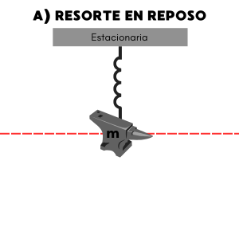
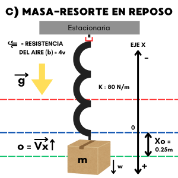

APLICACIONES DE
ECUACIONES DIFERENCIALES
DE SEGUNDO ORDEN
CARRERA:
Tecnologías de la Información y Comunicaciones
AUTORIA:
Jennifer Vázquez
Maria Fernanda Sánchez Pérez
Julio César Molina Sánchez
MATERIA:
Matemáticas Aplicadas a las Comunicaciones
DOCENTE RESPONSABLE:
Saul Olaf Loaiza Meléndez
SEMESTRE:
Tercero
INTRODUCCIÓN
El modelo masa-resorte es un sistema básico y muy útil en física e ingeniería para entender cómo funcionan las oscilaciones. Imaginemos una masa conectada a un resorte: si movemos esa masa desde su posición de equilibrio, el resorte se estira o se comprime, generando una fuerza que quiere devolverla a su lugar original. Esta fuerza es proporcional a cuánto se deformó el resorte, y siempre apunta en dirección opuesta al desplazamiento, creando así un movimiento de ida y vuelta alrededor de una posición central.
Para describir este comportamiento, se puede plantear una ecuación diferencial de segundo orden que nos dice cómo cambia la posición de la masa con el tiempo. Esta ecuación capta la esencia de las oscilaciones en el sistema y ayuda a analizar distintos escenarios, incluyendo los casos en que hay fricción o fuerzas externas que afectan el movimiento.
El modelo masa-resorte no solo es útil como teoría; es también la base para entender la vibración de muchas cosas que nos rodean como:
Edificios y rascacielos: los edificios están expuestos a movimientos del suelo que pueden causar oscilaciones.
Puentes: pueden vibrar debido al viento, el paso de vehículos o incluso las pisadas de peatones.
Amortiguadores de vehículos: funcionan como un sistema masa-resorte amortiguado.
Instrumentos musicales: cuando se toca una cuerda, esta se comporta como una masa unida a un "resorte" virtual (su tensión), y oscila para producir el sonido que escuchamos.
En todos estos sistemas, hay partes que pueden moverse o vibrar en respuesta a diferentes fuerzas, y el comportamiento que siguen es muy parecido al de la masa que se mueve con un resorte.
MARCO TEÓRICO
El modelo masa-resorte es una herramienta fundamental en física e ingeniería para analizar sistemas que presentan movimiento oscilatorio. Este modelo simplificado permite estudiar cómo una masa sujeta a un resorte se comporta al desplazarse de su posición de equilibrio debido a una fuerza restauradora, proporcionando así una descripción básica de las oscilaciones.
Ley de Hooke
La ley de Hooke establece que la fuerza recuperadora es proporcional al desplazamiento, esto es, al alargamiento o elongación que experimenta el resorte respecto a la posición de equilibrio. Esto se cumple para deformaciones pequeñas, siempre que no se sobrepase el límite de elasticidad o límite elástico del resorte.
Por tanto, si F es la fuerza aplicada al resorte y x es el desplazamiento, la relación entre ambas cantidades se puede expresar como:
donde k es la llamada constante elástica del resorte o constante del resorte, con dimensiones de fuerza por unidad de longitud. La fuerza recuperadora de un resorte cuando se estira una distancia x tendrá el mismo módulo que la fuerza en la ecuación , pero con sentido opuesto, lo que indica que la fuerza se opone al desplazamiento x.
Al colgar de un resorte pesas de masa creciente, el peso será igual a la fuerza recuperadora cuando el sistema alcance un estado de equilibrio. Si se miden los desplazamientos para diferentes masas se puede representar una gráfica F-x, cuyo resultado es una recta con pendiente igual a k.
Ecuacion Diferencial de Segundo orden
El modelo masa-resorte se describe mediante una ecuación diferencial de segundo orden, que refleja cómo varía la posición de la masa en el tiempo. Usando la segunda ley de Newton, que establece que la fuerza es igual a la masa por la aceleración (F=ma), se puede formular la ecuación de movimiento para el sistema. Dado que la aceleración es la segunda derivada
de la posición respecto al tiempo, se obtiene:
o de otra forma:
Esta ecuación es característica de un oscilador armónico simple y describe un movimiento oscilatorio alrededor de la posición de equilibrio. La solución de esta ecuación describe una oscilación sinusoidal cuya frecuencia natural depende de la masa m y de la constante del resorte k.
Oscilador Armonico Simple y Frecuencia Natural
El sistema masa-resorte es un ejemplo de oscilador armónico simple, en el cual la fuerza restauradora es directamente proporcional al desplazamiento. La frecuencia natural del sistema, que indica cuántas oscilaciones realiza la masa por segundo, se calcula como:
donde ω es la frecuencia angular del sistema. Este parámetro es crucial, ya que determina la rapidez de las oscilaciones y permite caracterizar el comportamiento dinámico del sistema.
Tipos de Sistemas Masa-Resorte: Amortiguador y Forzados
Existen variaciones del modelo masa-resorte básico que consideran fuerzas adicionales, como la resistencia del aire o la fricción, y fuerzas externas aplicadas. Los sistemas amortiguados, por ejemplo, incorporan una fuerza de amortiguamiento proporcional a la velocidad de la masa, que se opone al movimiento y reduce la amplitud de las oscilaciones con el tiempo.
También existen sistemas forzados, en los cuales se aplica una fuerza externa periódica sobre la masa. Estos sistemas permiten estudiar fenómenos de resonancia, en los que la frecuencia de la fuerza externa coincide con la frecuencia natural del sistema, provocando un incremento en la amplitud de las oscilaciones.
Aplicaciones del Modelo Masa-Resorte
El modelo masa-resorte se utiliza ampliamente en diversas áreas para predecir y controlar las oscilaciones es crucial para analizar la respuesta de estructuras como puentes y edificios ante cargas dinámicas o terremotos. En la industria automotriz, los amortiguadores de los vehículos son sistemas masa-resorte amortiguados que ayudan a mejorar la estabilidad y confort. En dispositivos electrónicos, los cristales de cuarzo, que oscilan de manera controlada, funcionan de acuerdo con principios similares, siendo esenciales en relojes y equipos de comunicación.
PROBLEMÁTICA
En la física y la ingeniería, como ya se ha mencionado anteriormente, el modelo masa-resorte se emplea para describir sistemas de oscilación donde una masa sujetada a un resorte, el cual, al estirarse o comprimirse, genera una fuerza restauradora proporcional a su deformación, lo que da lugar a oscilaciones alrededor de una posición de equilibrio
No obstante, el análisis de este sistema requiere la formulación de ecuaciones diferenciales (EDO) de segundo orden que describen con exactitud sus oscilaciones y el efecto de factores como la masa y la constante del resorte.
Para estudiar los desafíos de modelar y resolver problemas de este tipo, en este trabajo resolveremos 2 problemas del modelo masa resorte y su respectiva EDO de segundo orden:
1er Problema:
Se cuelga un objeto de 15 kg de un resorte, y se observa un estiramiento de 61 cm hasta el punto de equilibrio.
Incisos:
¿Cuál es la constante del resorte?
Si se estira el objeto hasta 40 cm abajo del punto de equilibrio y se suelta, ¿Cuál es la posición del objeto 10 segundos después?
¿Cuál es su velocidad en ese punto?
Problematicas principales:
¿Cómo representamos gráficamente cada situación de cambio?
¿Qué ley o fórmula utilizaremos para la constante?
¿Cómo empleamos la fórmula de la fuerza externa en el sistema?
¿Cómo interpretamos la gráfica de la onda sinusoidal producida por el resorte?
2do Problema:
Un resorte cuelga verticalmente; su extremo superior está fijo y del inferior pende una caja que pesa 196 N. Una vez en equilibrio, se tira de la caja hacia abajo haciéndola desplazar 0.25 m y se suelta. Sabiendo que k=80 N/m y que la resistencia del aire es de 4v.
Preguntas:
Encontrar la ley de movimiento de la caja.
Encontrar el tiempo necesario para que la caja se mueva desde la posición inicial hasta 0.0625 m por debajo de la posición de equilibrio.
Problematicas principales:
¿Como influye la resistencia del aire en la ley del movimiento de la caja?
Es necesario comenzar con el análisis del problema, así mismo el modelado de sus diversos diagramas, como se pueden ver a continuación:

EXPLICACIÓN DE LOS DIAGRAMAS:
DIAGRAMA 1:
Permite visualizar el estado de reposo
del resorte en cuestión, puesto que esté no está siendo
estirado ni comprimido. La principal caracteristica en
este diagrama es que la fuerza que se ejerce en el
resorte es igual a cero, ya que no hay otras fuerzas
actuando sobre él. Ademas, el resorte en este punto
sigue con su longitud natural.
DIAGRAMA 2:
Representa la integración de una masa
al sistema del resorte anterior, en donde ambos componentes
se encuentran en reposo. En este paso es esencial señalar la
orientación de los signos, con respecto al eje X.
DIAGRAMA 3:
A diferencia de los dos diagramas anteriores, este diagrama
representa un sistema donde masa y resorte se encuentran
en acción.
En el caso del resorte se puede ver como se estira o se comprime. Por lo que,
se puede mencionar que la gravedad (g) tiene un papel importante.
DATOS:
Segun la problematica anteriormente presentada, se pueden mencionar
los siguientes valores:
MASA (m) = 15 kg
ESTIRAMIENTO DEL RESORTE (l) = 61 cm
LEY/FORMULA
/TEOREMA:
Para poder realiza el calculo de la CONSTANTE DEL
RESORTE es necesario la utilización de la:
SEGUNDA LEY DE NEWTON
La cual menciona:
“El cambio de movimiento es directamente proporcional
a la fuerza motriz impresa y ocurre según la línea recta
a lo largo de la cual aquella fuerza se imprime”.
La formula de esta ley se representa como: F = m ⋅ a
Lo que al representarla para este tipo de ejercicios quedaria
de la siguiente forma:
Σ→Fx = m →ax ...(1)
Para poder calcular en este caso la Fuerza
del resorte se tendrá la expresión: →Fx = →W
Una vez reescrito como una ecuación
escalar, donde se pasa de tener la representación de
vectores a escalares, se tiene la formula por la cual se encontrará la CONSTANTE
DEL RESORTE:
→Fx -
→Wx = 0
...(2)
SOLUCIÓN:
A partir de la Expresión (2) se representara la fórmula según
los parametros que nos esta ofreciendo el ejercicio, por lo tanto será equivalente a:
(lK) - (mg) = 0
DONDE:
l : ESTIRAMIENTO DEL RESORTE
K : CONSTANTE DEL RESORTE
m : MASA
g : CONSTANTE DE LA GRAVEDAD (9.81m⁄s2)
Se DESPEJARÁ K, ya que esta representa la Constante del Resorte, quedando de
la siguiente manera:
K = mg⁄l
⇒ K = (15kg)(9.81m⁄s2)
⁄0.61m
⇒ K ≈ 241.23 N⁄m
Por lo que se puede concluir que el VALOR DE LA CONSTANTE DEL RESORTE
es igual a: K ≈ 241.23 N⁄m
Si se estira el objeto hasta 40 cm abajo del punto de equilibrio y se suelta, ¿Cuál es la posición del objeto 10 segundos después?
Tomando en cuenta el resultado obtenido en el INCISO A) y el Diagrama 3, el cual se presenta nuevamente a continuación:
Se pueden contemplar los siguientes aspectos para llegar al
resultado solicitado.
DATOS:
Se enlistan los datos necesarios para el calculo:
MASA (m) = 15 kg
CONSTANTE DEL RESORTE (K) = 241.23 N⁄m
CONDICIÓN INICIAL DE DESPLAZAMIENTO (X0= 40cm
MODELO MATÉMATICO:
mx"(t) + bx' + Kx = 0
Ya que NO SE ESPECIFICA EL VALOR DE b, la expresión a utilizar será la siguiente:
mx" + Kx = 0...(1)
DONDE:
m : MASA
x" : SEGUNDA DERIVADA DEL DESPLAZAMIENTO
K : CONSTANTE DEL RESORTE
x : DESPLAZAMIENTO
SOLUCIÓN:
Para poder resolver son necesarias dos condiciones, puesto que se esta
trabajando con una ECUACIÓN DE SEGUNDO ORDEN, las cuales serán:
x(0) = 0.40 m
Aunque el ejercicio no brinde el valor del equilibrio, se sabe que este será
equivalente a la primera derivada de la condición inicial, por lo que:
x'(0) = 0 m⁄s
El siguiente paso es sustituir en Expresión (1), teniendo asi la siguiente
ecuación auxiliar:
15x" + 241.23x = 0...(2a)
A partir de este paso se acaba el análisis dimensional. Se continua con el calculo llevando a cabo TRANSFORMADA
DE LAPLACE para la ecuación auxiliar (2a) :
ESCRITURA DE TRANSFORMADA DE LAPLACE:
En este paso unicamente se lleva a cabo la sustitución de los valores
de m y K, dado sus valores correspondientes.
EXPRESIÓN SEGÚN LA PROPIEDAD DE LA TRANSFORMADA DE LAPLACE
Según la expresión para una ecuación de segundo orden, la cual es:
\(\mathcal{L} \{ x"\} \) = s2 X(s) - sx(0) - x'
Se coloca cada una de las partes según \(\mathcal{L} \{ \} \) :
15[s2 X(s) - sx(0) - x'] + 241.23 X(s) = 0
SUSTITUCIÓN DE POSICIÓN INICIAL:
La estructura de la ecuación es similar a la anterior, pero
ahora se ha incorporado un valor específico para el efecto
inicial de la posición.
15[s2 X(s) - 0.40s] + 241.23 X(s) = 0
MULTIPLICACIÓN DE CONSTANTE:
Al multiplicar 15 por los valores que se encuentran
dentro de [], se obtiene una ecuación más simplificada.
A partir de esta, se podrá encontrar x(t), al hacer la TRANSFORMADA
INVERSA DE LAPLACE.
15s2 X(s) - 6s + 241.23 X(s) = 0
Posteriormente, es necesario el DESPEJE DE X(s) para poder transformar
la expresión a un DOMINIO DE TIEMPO:
Ya que X(s) puede ser despejada en ambos factores, se tiene lo siguiente:
X(s) (15s2 + 241.23) = 6s
Despeje final para X(s):
X(s) = 6s⁄15s2 + 241.23
La siguiente parte del calculo del resultado que se busca obtener, es el realizar
la TRANSFORMADA INVERSA, la cual queda de la siguiente manera:
Se comienza despejando en la parte de NUMERADOR para s, por que 6 se pasa
del lado contrario a la Transformada Inversa. Ademas, en la parte del
DENOMINADOR se lleva a cabo el despeje de s con la constante 15, esto
siendo posible a la división de 241.23 entre 15 para no afectar el valor
por ningun motivo.
Para poder simplicar la expresión con ayuda de una TABLA DE LAPLACE, será
necesario el escribir la fracción que forma parte del denominador, de
la siguiente manera:
Como ultimo paso, se tiene que COLOCAR 10 COMO VALOR EN t
en la Ecuación (3) puesto que en ese tiempo esta es la posición que esta pidiendo el inciso, por lo que
su calculo es:
Por lo que se puede concluir que la POSICIÓN DEL OBJETO 10 SEGUNDO DESPUÉS DE ESTIRAR EL RESORTE
es de: x(10) ≈ -0.295 m
GRÁFICA DE LA FUNCIÓN (3) UTILIZANDO GEOGEBRA:
¿Cuál es su velocidad en ese punto?
DATOS:
Del INCISO B), es necesario recuperar la expresión resultante
para x(t), la cual es:
\( x(t) = \frac{6}{15} \cos \left( \sqrt{\frac{241.23}{15}} \right) t \)...(3)
LEY/FORMULA
/TEOREMA:
Antes de comenzar el cálculo de este inciso, es necesario el análisis del
mismo; es así como se menciona que la velocidad será el resultado de dividir
la derivada de la posición sobre el tiempo:
\( v = \frac{d}{dt} (x(t)) = \frac{dx}{dt} \)
Además de esa fórmula, es indispensable la
identificación de la DERIVADA DE cos(Kt), la
cual es: -K sen(Kt).
SOLUCIÓN:
Segun la formula de la derivada de cos(Kt), se
sustituye de la siguiente manera:
Es necesario comenzar con el análisis del problema, así mismo el modelado de sus diversos diagramas, como se pueden ver a continuación:

EXPLICACIÓN DE LOS DIAGRAMAS:
DIAGRAMA 1:
Al igual que en el caso anterior, el primer diagrama
permite visualizar el estado de reposo
del resorte en cuestión, puesto que esté no está siendo
estirado ni comprimido. Donde la fuerza que se ejerce en el
resorte es igual a cero y el resorte en este punto
sigue con su longitud natural. La diferencia en este caso es que
el sistema integra una amortiguación reflejada con el simbolo
de color rojo en el que sería el resorte.
DIAGRAMA 2:
Del mismo modo, el segundo diagrama representa la
integración de una masa al sistema del resorte anterior,
en donde ambos componentes se encuentran en reposo.
En este paso es esencial señalar la
orientación de los signos, con respecto al eje X.
DIAGRAMA 3:
A diferencia de los dos diagramas anteriores, este diagrama
representa un sistema donde masa y resorte se encuentran
en acción.
En el caso del resorte se puede ver como se estira o se comprime. Por lo que,
se puede mencionar que la gravedad (g) tiene un papel importante, Ademas, en este
diagrama es donde se ve más relevante el tener presente
la constante de amortiguamiento.
DATOS:
Segun la problematica anteriormente presentada, se pueden mencionar
los siguientes valores:
PESO DE LA CAJA (W)= 196 N
ESTIRAMIENTO DEL RESORTE (x0) = 0.25 m
El término se manejará como POSITIVO, debido a la asignación
de valores en el eje x, con relación al DIAGRAMA 3.
CONSTANTE DEL RESORTE (K) = 80 N⁄m
RESISTENCIA DEL AIRE (fb) = 4v
MODELO MATÉMATICO:
A diferencia del ejercicio 1, en este
caso SI SE ESPECIFICA EL VALOR
DE b, por lo que la expresión a utilizar
será la siguiente:
mx" + bx' + Kx = 0...(1)
DONDE:
m : MASA DE LA CAJA
b: COEFICIENTE DE RESISTENCIA DEL AIRE
K : CONSTANTE DEL RESORTE
x : DESPLAZAMIENTO DESDE POSICIÓN DE EQUILIBRIO
x' : VELOCIDAD DE LA CAJA
x" : ACELERACIÓN DE LA CAJA
SOLUCIÓN:
Es necesario el OBTENER LA MASA DE LA CAJA
segun los valores anteriormente
presentados, el cual será:
m = W⁄g = 196 N⁄9.81 m⁄m2 = 20 Kg
Segun la Ecuación (1), se sustituyen
los valores con los elementos, quedando de la
siguiente manera:
20x"+ 4x' + 80x = 0 ...(1a)
Para poder resolver, se identifican las dos condiciones, puesto que se esta
trabajando con una ECUACIÓN DE SEGUNDO ORDEN, las cuales serán:
x(0) = 0.25
Aunque el ejercicio no brinde el valor del equilibrio, se sabe que este será
equivalente a la primera derivada de la condición inicial, por lo que:
x'(0) = 0
En este punto se comienza con la TRANSFORMADA DE LAPLACE, la cual escrita
en primera instancia será igual a:
A continuación se lleva a cabo el despeje de X(s), lo que corresponde a:
\( X(s) = \frac{5s + 1}{20s^2 + 4s + 80} \)
A partir de este paso, a para hacer posible el calculo que se solicita, se debera aplicar
un método denominado COMPLETAR EL CUADRADO, lo que se formulará de la siguiente forma:
as2 + bs + c = (s+K1)2 ± (K2)2
Una vez sustituyendo los valores obtenidos, se tiene la expresión:
20s2 + 4s + 80 = 0
Resulta NECESARIO el igualar el coeficiente s2 a 1, esto siendo posible por
dividir los valores entre 20:
s2 + 1⁄5 s + 4 = 0
El siguiente paso consiste en la FACTORIZACIÓN DEL TRINOMIO CUADRADO PERFECTO que se obtuvo en el paso anterior, esto con el objetivo de completar el cuadrado:
s2 + (1⁄5)s + (1⁄s⁄2)2
= -4 + (1⁄s⁄2)2
Lo que prosigue en el calculo es colocar el valor de (1⁄s⁄2)2 en ambos
lados de la ecuación, lo que junto con sus operaciones que le corresponden se realizará lo siguiente:
(s + 1⁄10)2 = -4 + 1⁄100
(s + 1⁄10)2 = - 399⁄100
(s + 1⁄10)2 + 399⁄100
Se tiene la expresión lista para poder despejar X(s):
Por ultimo, se aplicarán las TABLAS DE LAPLACE correspondientes a cada una de las partes que se obtuvieron del paso anterior:
\( x(t) =
5e^{-\frac{1}{10}t} cos({\sqrt{\frac{399}{10}}}) t \)
\( + \frac{1}{2}e^{-\frac{1}{10}t} sen({\sqrt{\frac{399}{10}}}) t
\)
Por lo que se puede concluir que la LEY DE MOVIMIENTO DE LA CAJA
es igual a:
\( x(t) =
5e^{-\frac{1}{10}t} cos({\sqrt{\frac{399}{10}}}) t + \frac{1}{2}e^{-\frac{1}{10}t} sen({\sqrt{\frac{399}{10}}}) t
\)
GRÁFICA DE LA FUNCIÓN (3) UTILIZANDO GEOGEBRA:
Lo que refleja la EXPRESIÓN 1a es que corresponde a un POLINOMIO CUADRÁTICO por lo tanto, puede simplificarse el calculo aplicando
la FÓRMULA GENERAL para resolverla:
\[
x = \frac{-b \pm \sqrt{(b)^2 - 4 (ac)}}{2a}
\]
DONDE:
a = 20
b = 4
c = 80
Por lo que la FORMULA GENERAL a resolver es:
\[
x = \frac{-4 \pm \sqrt{(4)^2 - 4 ((20)(80))}}{2(20)}
\]
Se puede simplificar el calculo, ya que solo se menciona el método
por lo tanto, se utilizará un programa en Python para resolverlo:
Se puede ver que x tendrá el valor de:
\[x = -0.1 \pm 1.9974984355438177i\]
Lo que se simplificará a:
\[x = -0.1 \pm 2i\]
Es necesario conocer la FORMULA DE SOLUCIÓN GENERAL CON RAÍCES COMPLEJAS, la cual es:
x(t) = e-αt(A cos (βt) + B sin(βt))
DONDE:
A y B: Constantes
determinadas a partir de condiciones iniciales
α : Representa el amortiguamiento EQUIVALENTE A: -0.1
β : Representa frecuencia de oscilación EQUIVALENTE A: 2
Sustituyendo los valores que se tienen en la fórmula anterior, se tiene:
x(t) = e-0.1t(A cos (2t) + B sin(2t))...(2)
Para el valor de A se tendrá que:
A = 0.25
Para el valor de B se tendrá que:
α(A) + 2B = 0
-0.1(0.25) + 2B = 0
-0.025 + 2B = 0
B = 0.0125
Sustituyendo los valores que se tienen en la fórmula anterior, se tiene:
x(t) = e-0.1t(0.25 cos (2t) + 0.0125 sin(2t))
Lo que es equivalente a la solución dada para la LEY DE MOVIMIENTO DE LA CAJA
, si este resultado en A y B se multiplica con sus correspondientes valores de 20 y 4.
Encontrar el tiempo necesario para que la caja se mueva desde la posición inicial hasta 0.0625m por debajo de la posición de equilibrio.
DATOS:
PESO DE LA CAJA (W) : 196 N
CONSTANTE DEL RESORTE (K) :80 N⁄m
POSICIÓN DE EQUILIBRIO : 0
POSICIÓN DESEADA : -0.0625m (por debajo de su posición de equilibrio)
RESISTENCIA DEL AIRE: 4v
LEY/FÓRMULA
/TEOREMA:
Se recupera del INCISO B) la LEY DE MOVIMIENTO DE LA CAJA, la cual es:
x(t) = e-0.1t(-0.25 cos (2t) + 0.0125 sin(2t))...(3)
SOLUCIÓN:
Se establece la ecuación que se esta resolviendo y el resultado al que se desea llegar, la cual es:
x(t) = e-0.1t(-0.25 cos (2t) + 0.0125 sin(2t)) = -0.0625
Se multiplican ambos lados de la ecuación por e-0.1t, con el objetivo de eliminar el factor exponencial:
-0.25 cos(2t) + 0.0125 sin (2t) = -0.0625 e0.1t
Se reorganiza la expresión para que su resultado sea 0, asi continuar con los calculos, lo que se ve de la siguiente manera:
-0.25 cos(2t) + 0.0125 sin(2t) + 0.0625 e0.1t = 0
Para encontrar el valor de t, como es un procedimiento complejo, se recurrio a la implementación
de un codigó en lenguaje Python para facilitar la tarea, el cual se puede ver a continuación:
Por lo que se puede concluir que el VALOR DEL TIEMPO SOLICITADO
es equivalente a: t ≈ 0.6259 segundos
Realizar los tres tipos de amortiguamiento modificando los valores del ejercicio 2
Como sabemos el amortiguamiento se divide en 3:
Bajo amortiguado
Lo que significa que el sistema está subamortiguado y tendrá oscilaciones. En la ecuación se usaría
−𝜇 para que la función decaiga.
Amortiguado críticamente
Donde el sistema regresa a cero lo más rápido posible sin oscilar.
Sobre amortiguado
Donde el sistema también regresa a cero pero más lentamente y sin oscilar.
LEY DE LA CAJA
Rescatando la Ecuacion obtenida del inciso A) tenemos:
f(t) = 5 e-1/10 t cos
(
√39910
t ) + 0.5 e-1/10 t sen
(
√39910
t ) …(0)
Bajo Amortiguado
En la ecuación (0), la parte que cambia dependiendo de la amortiguación es -1/10 t por lo que
si queremos obsevar un bajo amortiguado este valor debe ser −𝜇 < 1, que si nos damos cuenta, la ecuacición:
f(t) = 5 e-1/20 t cos
(
√39910
t ) + 0.5 e-1/20 t sen
(
√39910
t ) ...(1)
GRÁFICA DE LA FUNCIÓN (1) UTILIZANDO GEOGEBRA:
Amortiguado críticamente
Para obsevar un amortiguado críticamente este valor debe ser −𝜇 = 1, por lo que la ecuación nos queda algo así:
f(t) = 5 e-1t cos
(
√39910
t ) + 0.5 e-1t sen
(
√39910
t ) ...(2)
GRÁFICA DE LA FUNCIÓN (2) UTILIZANDO GEOGEBRA:
Sobre amortiguado
Para obsevar un sobre amortiguado este valor debe ser - 𝜇 > 1 por lo que la ecuación nos queda algo así:
f(t) = 5 e2t cos
(
√39910
t ) + 0.5 e2t sen
(
√39910
t ) ...(2)
GRÁFICA DE LA FUNCIÓN (3) UTILIZANDO GEOGEBRA:
×
CONCLUSIÓN
A través de este proyecto, hemos profundizado en el estudio de las ecuaciones diferenciales ordinarias de segundo orden, encontrando en el modelo masa-resorte un modelo completo
para comprender una amplia gama de fenómenos vibratorios.
Uno de los aspectos más sorprendentes es el concepto de oscilación sin fricción (del primer ejercicio), es una idea que nos permite estudiar oscilaciones ideales sin que intervengan fuerzas de resistencia. Esto facilita la exploración teórica y nos da una base para entender cómo se comportan los sistemas reales cuando las fuerzas de fricción son muy bajas.
Además, por la "frecuencia natural" de un sistema, hemos observado que una oscilación a esta frecuencia puede incrementar las amplitudes de forma significativa, un fenómeno llamado resonancia que ocurre en estructuras como puentes o edificios y que puede llevar al colapso si no se diseñan para soportar estas condicion.
Al resolver diversos problemas y analizar las soluciones obtenidas, hemos desarrollado habilidades en la resolución de ecuaciones diferenciales y en la interpretación de resultados.
La capacidad de modelar sistemas físicos complejos mediante ecuaciones diferenciales nos ha permitido comprender mejor las matemáticas en la vida cotidiana.
El modelo masa-resorte, en particular, ha servido como un puente entre la teoría y la práctica,
ayudandonos visualizar y cuantificar conceptos como el amortiguamiento y las masas.
Los conocimientos adquiridos en este proyecto tienen aplicaciones directas en diversas áreas de la ingeniería y la física, desde el diseño de estructuras que resistan eventos físicos (como sismos) hasta el desarrollo de sistemas de control. Además, hemos adquirido una base sólida para abordar problemas más complejos de ecuaciones diferenciales ordinarias.
BIBLIOGRAFÍA
phi. (n.d.). Uhu.Es. Retrieved November 2, 2024, from